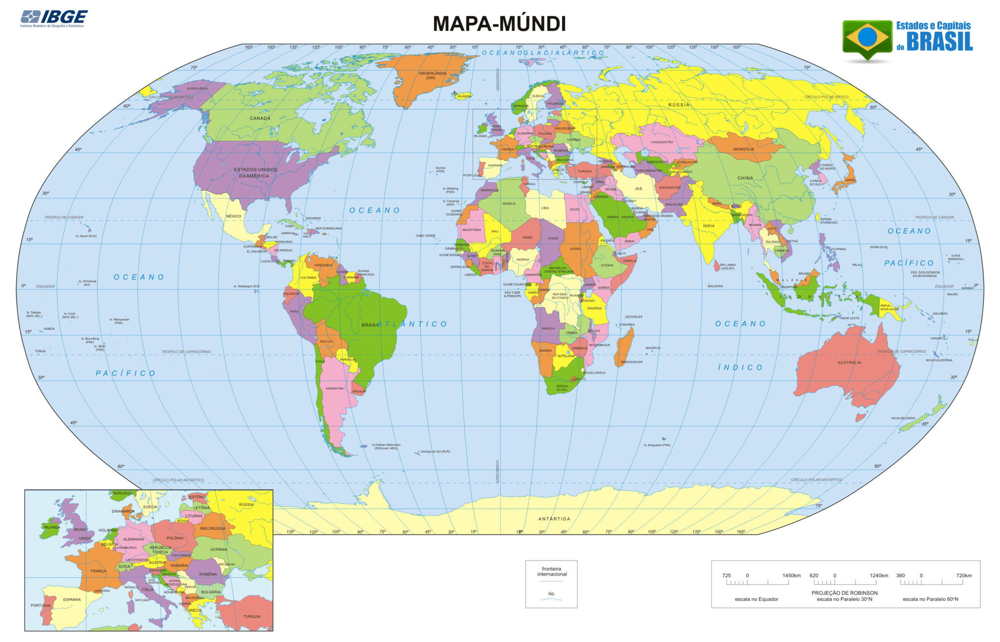

Por que estudar Geografia?
A Geografia permite que os alunos entendam o espaço em que vivem, aprendendo sobre o mundo, tanto politicamente, quanto biologicamente.
Principais benefícios
- Entender sobre o meio ambiente em que se vive
- Desenvolvimento de opiniões políticas
- Entendimento de mapas e localização
- Conhecimento das diversas culturas do planeta
Importância na educação
| Área | Importância |
|---|---|
| Meio Ambiente | Ajuda na preservação da natureza |
| Sociedade | Compreensão das relações sociais |
| Política | Desenvolvimento de opinião política |
Imagens
